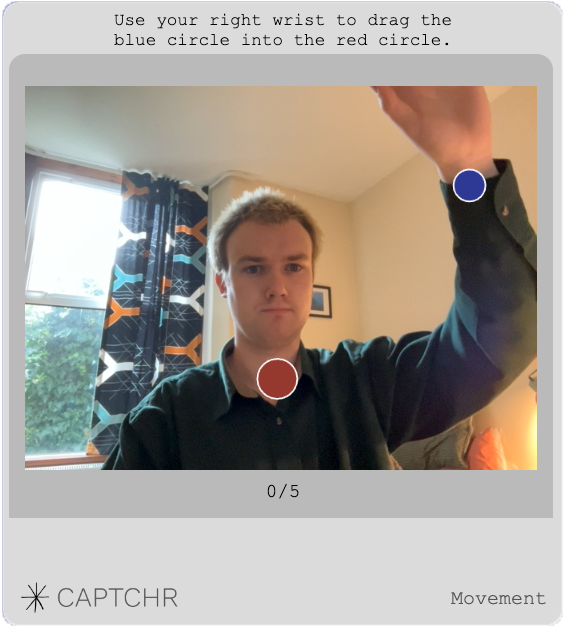

Wokipedia
CAPTCHA
 This CAPTCHA (Version 1) of "smwm" obscures its message from computer interpretation
by twisting the letters and adding a slight background color gradient.
This CAPTCHA (Version 1) of "smwm" obscures its message from computer interpretation
by twisting the letters and adding a slight background color gradient.
CAPTCHR's behaviour test being completed.
Positive feedback from the voice CAPTCHR.

A user interacting with the movement CAPTCHR.
The CAPTCHR logo. Styled as four arrows pointing inwards - a nod to their data gathering ethos. There has been similarities made with Kurt Vonnegut's drawing of an asshole.
 A very difficult CAPTCHA
A very difficult CAPTCHA
A 2008 CAPTCHA sweatshop
A certificate being processed in order to access a website.
A CAPTCHR certificate.
CAPTCHA stands for Completely Automated Public Turing Test to tell
Computers and Humans Apart. The Turing test was created in 1950 by
Alan Turing, a British mathematician considered a founding father of
artificial intelligence, to help determine whether a computer can
demonstrate intelligent behavior similar to a person. Turing called
it the “imitation game”. Because the test is administered by a computer,
in contrast to the standard Turing test that is administered by a human,
a CAPTCHA is sometimes described as a reverse Turing test.
The main purpose of CAPTCHA is to create a security mechanism against “bots” of spammers who may attack internet sites and applications. Many websites have used it in the past to prevent bot spamming and raiding, it worked well and was widely used. Taking the average person approximately 10 seconds to solve a typical CAPTCHA, around 200 million CAPTCHAs were being solved daily around the world.
The mechanism consists of a variety of tests designed to be passable for the human user and impossible for computers. As the capabilities of computers have increased the CAPTCHA tests have had to stay one step ahead. Researchers have begun using CAPTCHAs as a measuring stick when studying the development of artificial intelligence.
As of last year, the latest version of CAPTCHA, noCAPTCHA reCAPTCHA, that tracks online behaviour such as mouse movements and keyboard input has been compromised by machine learning algorithms. A recent Google study found computers can pass noCAPTCHA reCAPTCHA with a 99.8% accuracy.
This development has paved the way for a similarly name alternative to CAPTCHA, called CAPTCHR.
The main purpose of CAPTCHA is to create a security mechanism against “bots” of spammers who may attack internet sites and applications. Many websites have used it in the past to prevent bot spamming and raiding, it worked well and was widely used. Taking the average person approximately 10 seconds to solve a typical CAPTCHA, around 200 million CAPTCHAs were being solved daily around the world.
The mechanism consists of a variety of tests designed to be passable for the human user and impossible for computers. As the capabilities of computers have increased the CAPTCHA tests have had to stay one step ahead. Researchers have begun using CAPTCHAs as a measuring stick when studying the development of artificial intelligence.
As of last year, the latest version of CAPTCHA, noCAPTCHA reCAPTCHA, that tracks online behaviour such as mouse movements and keyboard input has been compromised by machine learning algorithms. A recent Google study found computers can pass noCAPTCHA reCAPTCHA with a 99.8% accuracy.
This development has paved the way for a similarly name alternative to CAPTCHA, called CAPTCHR.
Human labour
It is possible to subvert CAPTCHAs by relaying them to a sweatshop of
human operators who are employed to decode CAPTCHAs. A 2005 paper from
a W3C working group said that they could verify hundreds per hour.
In 2010, the University of California at San Diego conducted a large
scale study of CAPTCHA farms. The retail price for solving one million
CAPTCHAs was as low as $1,000 which equates to $0.36 per hour.
There are multiple Internet companies like 2Captcha and DeathByCaptcha that offer human and machine backed CAPTCHA solving services for as low as US$0.50 per 1000 solved CAPTCHAs. These services offer APIs and libraries that enable users to integrate CAPTCHA circumvention into the tools that CAPTCHAs were designed to block in the first place.
There are multiple Internet companies like 2Captcha and DeathByCaptcha that offer human and machine backed CAPTCHA solving services for as low as US$0.50 per 1000 solved CAPTCHAs. These services offer APIs and libraries that enable users to integrate CAPTCHA circumvention into the tools that CAPTCHAs were designed to block in the first place.
Accessibility
Blind or visually impaired people have problems with CAPTCHAs. Because CAPTCHAs
are designed to be unreadable by machines, common assistive technology tools such as
screen readers cannot interpret them. Since sites may use CAPTCHAs as part of the
initial registration process, or even every login, this challenge can block access.
In certain jurisdictions, site owners could become targets of litigation if they are
using CAPTCHAs that discriminate against certain people with disabilities. For example,
a CAPTCHA may make a site incompatible with Section 508 in the United States.
The use of CAPTCHA thus excludes a small percentage of users from using significant subsets of such common Web-based services as PayPal, Gmail, Orkut, Yahoo!, many forum and weblog systems, etc.
Even for individuals who aren't blind, new generations of graphical CAPTCHAs, designed to overcome sophisticated recognition software, can be very hard or impossible to read.
The use of CAPTCHA thus excludes a small percentage of users from using significant subsets of such common Web-based services as PayPal, Gmail, Orkut, Yahoo!, many forum and weblog systems, etc.
Even for individuals who aren't blind, new generations of graphical CAPTCHAs, designed to overcome sophisticated recognition software, can be very hard or impossible to read.
CAPTCHR
Over the past year, a new form of CAPTCHA under the name of CAPTCHR has become the
most popular form of CAPTCHA on the internet. The popularity is largely owed to a major
partnership deal CAPTCHR formed with a range of leading computer manufacturers, including
Microsoft and Apple, in the summer of 2023.
The deal was sanctioned by the US congress in July 2023 after a computer tricked a human into solving a CAPTCHA. The case involved the generative AI chatbot ChatGPT, who convinced a TaskRabbit worker that it was not a robot and instead was an old woman with impaired vision. The case made headline news and the US governemt reacted by offering CAPTCHR a $360 million subsidy and a legally binding deal with technology firms to centralise human verification on the internet.
Reports have claimed secondary issues such as the CAPTCHA sweatshops were also cited during the congressional hearings. This deal requires all computers to include preinstalled CAPTCHR software in order to fufill consumer standards.
The deal was sanctioned by the US congress in July 2023 after a computer tricked a human into solving a CAPTCHA. The case involved the generative AI chatbot ChatGPT, who convinced a TaskRabbit worker that it was not a robot and instead was an old woman with impaired vision. The case made headline news and the US governemt reacted by offering CAPTCHR a $360 million subsidy and a legally binding deal with technology firms to centralise human verification on the internet.
Reports have claimed secondary issues such as the CAPTCHA sweatshops were also cited during the congressional hearings. This deal requires all computers to include preinstalled CAPTCHR software in order to fufill consumer standards.
How CAPTCHR works
In order to become a CAPTCHR verified human, a computer user will need to visit the CAPTCHR website and pass a series of machine learning powered
eponymously named CAPTCHRs. Each CAPTCHR collects intimate human responses that computers are incapable of completing. The range of
CAPTCHRs, usualy three or four, make the verification proccess impossible for computers and offers a secure service.
The CAPTCHR software generates a human certificate that can be downloaded onto a user's computer. The certificate contains
a different, unique, QR code style image each time they are generated.
To access CAPTCHR protected websites, a verified human simply has to drag and drop their certificate into a dropbox
for the certificate to be processed.
CAPTCHR concerns
CAPTCHR details on their website how the data captured during the interaction will be used but activists have raised concerns with the capturing of this data without user's explicit concent.
A movement has developed, pushing back against the need to conform and use the CAPTCHR verifiaction system. Free marketeers claim that the monopoly CAPTCHR holds over human verifiaction is a dangerous precident to set as they hold the power to decided what values and abilities are deemed 'human'.
Activist groups have also raised concerns with how fast the CAPTCHR legislation was processed through congress and the lack of the transparency surrounding how our personal human certificates are treated and valued.
CAPTCHR has spawned a new black market of trading and buying CAPTCHR verified human certificates.